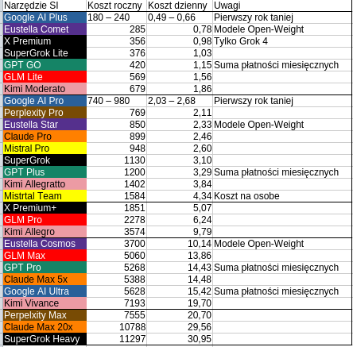

Kurs z 8 Lipca 2026

Tabela jest od najtańszych do najdroższych, stąd najdroższe na samym dnie. Widać że najtańsze jest Gemini z tej racji że Google to megakorporacja, która może sobie pozwolić na zniżki cen. Wiele firm rywalizuje na tańszym tierze, aby zapewnić niski koszt wejścia, i zdobyć przyszłych klienów. Zaskakuje jednak rywalizacja na najmocniejszym poziomie, taki Grok uznawany za gorszego, rywalizuje z Claude, a obok jest Kimi i Perplexity, również o dosyć niszowym zastosowaniu. DeepSeek czy Qwen w ogóle nie oferują subskrypcji konsumenckich przez marże bankowe, jak i kwestie prawne, prywatności.
Warto zaznaczyć że to tylko porównanie cen. Realne profity bywają różne, a deklarowane profity wymagają weryfikacji, która kosztowała by spore pieniądze. Google oferuje cały ekosystem i zależy im aby użytkownik spędzał więcej czasu na ich platformach. Miejsce na Dysk Google i YouTube Premium skutecznie zachęciło niektórych recenzentów jesienią 2025.
X Premium oraz Premium+ wyróżnia się pod względem powtarzalności subskrypcji. X to media społecznościowe, brak kontynuowania płatności oznacza gorszą widoczność algorytmiczną użytkownika. Jeśli ktoś chce budować zasięgi i nawet mało publikuje, to będzie mieć kary za to że nie należy do elity, jak choćby limity w pisaniu. Same profity Grok z X Premium są raczej niewielkie. Poza trybem ekspert jest zasobożerny generator obrazków, w tym jakieś 10 video tygodniowo.
Wstecz